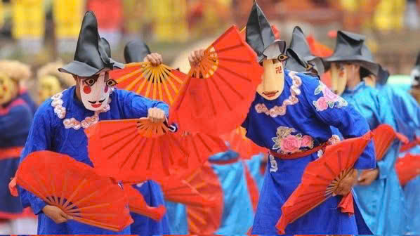
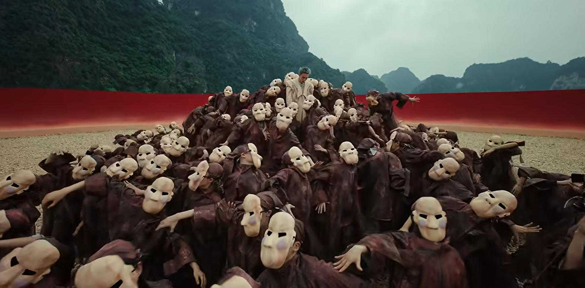
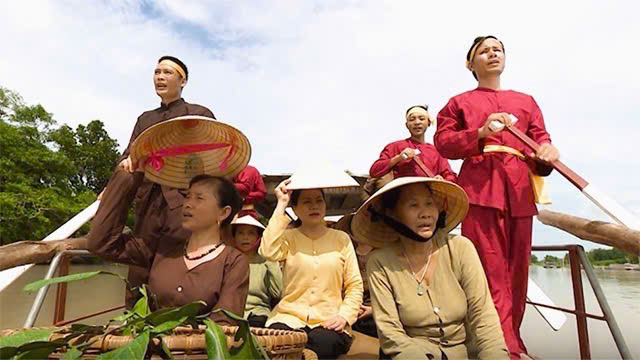
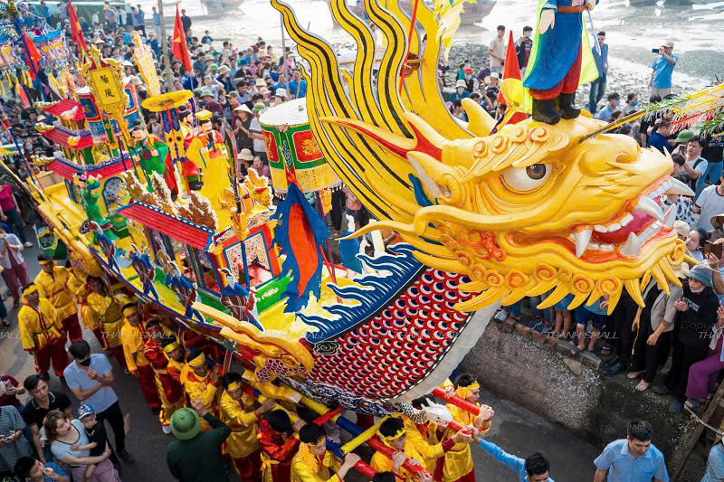

DI SẢN PHI VẬT THỂ & LỄ HỘI TRUYỀN THỐNG XỨ THANH
Thanh Hóa - vùng đất "địa linh nhân kiệt" - là nơi lắng đọng trọn vẹn những dòng chảy lịch sử nghìn năm qua hệ thống di sản phi vật thể vô giá và vô số lễ hội truyền thống đặc sắc. Từ những điệu Hò sông Mã cuộn trào khí thế, làn điệu Trò Xuân Phả uyển chuyển huyền bí, đến rực rỡ sắc màu Lễ hội Lam Kinh, Lễ hội Đền Sòng..., mỗi di sản đều là một "bảo vật tâm hồn", khắc họa sâu sắc khí chất, chiều sâu văn hóa và bản sắc độc đáo của người dân Xứ Thanh. Trân trọng và phát huy nguồn tài nguyên văn hóa vô giá đó, Thanh Hóa không ngừng gìn giữ, nâng tầm các di sản trở thành sản phẩm du lịch - trải nghiệm đẳng cấp. Đến với Xứ Thanh, Quý du khách và đối tác không chỉ tìm về miền ký ức di sản rạng rỡ, hòa mình vào không gian tâm linh linh thiêng, mà còn cảm nhận trọn vẹn sức sống mới của một vùng đất giàu bản sắc, mở ra những cơ hội hợp tác, giao lưu văn hóa và phát triển du lịch bền vững.
Trò xuân phả
Bắt nguồn từ ngôi làng Xuân Phả cổ kính bên dòng sông Chu, Trò Xuân Phả là viên ngọc quý trong kho tàng nghệ thuật dân gian Xứ Thanh, được lưu truyền qua hơn một thiên niên kỷ lịch sử. Tương truyền có từ thế kỷ IX, trò diễn là sự kết tinh hoàn hảo giữa huyền thoại và đời sống, phát triển thành một tổ hợp múa dân gian độc nhất vô nhị, mang đậm hơi thở tâm linh và khí chất phóng khoáng của vùng đất văn hiến.

Vượt lên trên một trò diễn dân gian thông thường, Xuân Phả là bản hòa tấu nghệ thuật độc nhất vô nhị - nơi hơi thở mộc mạc của làng quê hòa quyện nét trang nghiêm, lộng lẫy của chốn cung đình. Sự giao thoa tinh tế ấy không chỉ phản ánh trí tuệ sáng tạo cùng đời sống tinh thần phong phú của người dân Xứ Thanh, mà còn khắc họa nên một biểu tượng văn hóa cộng đồng trường tồn qua bao thế hệ. Hồn cốt của Xuân Phả đọng lại qua 5 điệu múa cổ điển: Hoa Lang, Tú Huần, Chiêm Thành, Ngô Quốc và Ai Lao. Những chiếc mặt nạ gỗ mang tạo hình bí ẩn, trang phục sặc sỡ sắc màu cùng các động tác múa vừa khỏe khoắn, vừa uyển chuyển tạo nên một diện mạo di sản vô cùng khác biệt. Đây chính là điểm đến nghệ thuật đầy say đắm, hứa hẹn mang lại cho Quý du khách những khoảnh khắc thưởng thức di sản sâu lắng và giàu cảm xúc.

Hò sông Mã
Sinh ra từ nhịp sóng xô và dạt dào nắng gió trên những chuyến thuyền dọc dòng sông Mã, Hò sông Mã là khúc ca lao động đầy kiêu hãnh của bao thế hệ người dân Xứ Thanh. Mỗi nhịp chèo khua nước, tiếng dậm chân nhịp nhàng trên mạn thuyền cùng sự phối hợp ăn ý của người chèo bè đã chắt lọc nên tiết tấu dồn dập, khỏe khoắn, vọng suốt chiều dài lịch sử của dòng sông di sản. Không chỉ là phương thức bắt nhịp cho sức mạnh tập thể vượt qua ghềnh thác, những câu hò cất lên giữa mênh mông sông nước còn gửi gắm tâm tư, tình yêu quê hương và tinh thần lạc quan tựa ngàn đời. Lắng nghe Hò sông Mã hôm nay, Quý du khách như được hòa mình vào không gian sông nước hữu tình, cảm nhận trọn vẹn sức sống bền bỉ và vẻ đẹp tâm hồn mộc mạc, chí tình của con người Thanh Hóa.

Vượt xa giá trị của một làn điệu dân ca, Hò sông Mã chính là cuốn nhật ký bằng âm thanh tái hiện chân thực đời sống lao động gian lao nhưng đầy kiêu hãnh của con người Xứ Thanh. Những câu hò da diết, khi trầm lắng lúc cuộn trào, gửi gắm trọn vẹn tình yêu lứa đôi, tình yêu quê hương đất nước cùng khát vọng muôn đời về một cuộc sống ấm no, thanh bình và hạnh phúc. Đặc sắc nhất trong cấu trúc Hò sông Mã chính là sự phân chia ngặt nghèo theo 5 chặng hành trình: Rời bến, Đò ngược, Mắc cạn, Đò xuôi và Cập bến. Mỗi chặng hát là một nấc thang cảm xúc nhịp nhàng theo từng thế chèo, nhịp sóng, mang lại cho Quý du khách trải nghiệm văn hóa sông nước đầy chất thơ, kết nối trọn vẹn với hồn cốt thiêng liêng của vùng đất di sản.
Lễ hội Lam Kinh
Mỗi độ thu về, khi làn gió heo mây khẽ chạm vào cây rừng Tây Sơn, đất trời Thanh Hóa lại rộn ràng bước vào Lễ hội Lam Kinh - khúc ca tưởng niệm hào hùng được tổ chức hằng năm vào tháng 8 âm lịch. Trong không gian linh thiêng của Khu di tích quốc gia đặc biệt Lam Kinh, lễ hội là gạch nối thời gian đưa tâm hồn người xem trở về với nguồn cội, soi chiếu lại mốc son lịch sử chói lọi của cuộc khởi nghĩa Lam Sơn vang danh muôn đời. Tìm về Lễ hội Lam Kinh trong sắc thu xứ Thanh, Quý du khách không chỉ được thắp nén hương tri ân các bậc tiền nhân anh hùng mà còn hòa mình vào không gian di sản đầm ấm, kiêu hãnh. Đây là điểm hẹn tâm linh sâu sắc, mở ra hành trình thưởng ngoạn văn hóa đầy tự hào, mang đến cho Quý vị những trải nghiệm tâm hồn thanh tịnh và giàu ý nghĩa.

Mở đầu Lễ hội Lam Kinh là nghi thức rước kiệu vua Lê Thái Tổ cùng Trung Túc vương Lê Lai trầm hùng, uy nghi tiến về sân Điện Lam Kinh. Giữa làn khói hương trầm nghi ngút, các lễ nghi dâng hương, tế lễ và trình tấu chúc văn vang lên thành kính tại thái miếu cùng khu lăng mộ. Không khí linh thiêng ấy như tái hiện hào khí Đông A một thời, bày tỏ lòng biết ơn sâu sắc đối với các bậc tiền nhân đã hy sinh vì vương nghiệp và nền độc lập của dân tộc. Khép lại không gian tâm linh trang nghiêm, phần hội bừng lên rực rỡ với những chương trình nghệ thuật tái hiện lịch sử cùng chuỗi trò diễn dân gian giàu bản sắc. Đến với không gian hội hè sôi động này, Quý du khách không chỉ được đắm mình trong hơi thở văn hóa truyền thống sống động mà còn trực tiếp tham gia các hoạt động trải nghiệm độc đáo, cảm nhận trọn vẹn sức sống trường tồn và lòng mến khách của con người Xứ Thanh.
Lễ hội Cầu Ngư
Mỗi độ xuân về, khi những ngọn sóng đầu năm rì rào vỗ bờ, các làng chài ven biển Thanh Hóa lại rộn ràng mở Lễ hội Cầu Ngư. Đây là điểm hẹn tâm linh thiêng liêng đong đầy niềm tin và hy vọng của cộng đồng ngư dân, nơi những nguyện ước bình an được gửi gắm theo làn gió biển khơi, hòa cùng nhịp sống bao đời gắn bó với trùng khơi sóng bạc. Giữa không khí xuân tươi mới, lễ hội không chỉ là lời tạ ơn sâu sắc gửi đến biển mẹ bao la mà còn là nét đẹp văn hóa tinh thần bền bỉ qua từng thế hệ. Tìm về với Lễ hội Cầu Ngư đầu năm, Quý du khách sẽ được đắm mình trong không gian văn hóa biển đảo đầm ấm, cảm nhận chân thực nhịp đập tâm hồn kiên cường, chí tình và chan chứa niềm tin của con người nơi đầu sóng.

Mở đầu cho Lễ hội Cầu Ngư là không gian tâm linh thành kính với tiếng chiêng, tiếng trống rộn rã rủ sóng nghinh thần. Điểm nhấn thiêng liêng nhất chính là lễ rước thuyền Long Châu - chiếc thuyền rồng công phu mang theo tấm lòng, lễ vật và ước nguyện của dân làng ra hướng cửa biển rộng lớn. Giữa hương trầm tỏa bay theo gió biển, mỗi nghi thức phóng sinh và tế lễ là lời tri ân sâu sắc gửi tới biển mẹ, cầu mong mưa thuận gió hòa, sóng yên biển lặng để những chuyến ra khơi luôn bình an, cá tôm đầy khoang. Khép lại phần lễ nghiêm trang, không khí bãi biển bừng lên sức sống náo nhiệt của phần hội với tiếng reo hò đua thuyền, thi chèo sub, kéo co cùng các làn điệu văn nghệ dân gian đậm chất biển. Tham dự vào ngày hội sông nước này, Quý du khách không chỉ được hòa mình vào nhịp sống hào hùng, hiếu khách của cộng đồng ngư dân mà còn đọng lại những cảm xúc tươi mới, trọn vẹn về nét đẹp văn hóa tâm linh độc đáo miền duyên hải Xứ Thanh.
Các lễ nổi bật khác
Dòng chảy di sản Xứ Thanh không dừng lại ở những trang sử hay những danh thắng đã xướng tên, mà vẫn còn vô vàn nét văn hóa độc đáo cùng các lễ hội truyền thống rực rỡ sắc màu đang hiện hữu trong đời sống thường nhật. Mỗi làn điệu, mỗi nghi thức chưa kịp kể hết đều là một mảnh ghép vô giá, làm nên bức tranh gấm vóc sống động và trọn vẹn của vùng đất "địa linh nhân kiệt". Để không bỏ lỡ những giá trị di sản đặc sắc tiếp theo, trân trọng kính mời Quý du khách và đối tác cùng thưởng thức thước phim dưới đây. Hãy thả mình vào những khung hình sống động để tiếp tục hành trình khám phá, cảm nhận trọn vẹn chiều sâu văn hóa và sức hút muôn màu của Thanh Hóa.